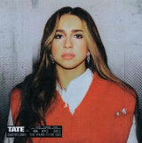
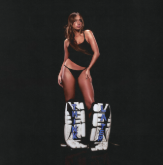
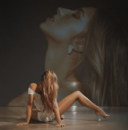
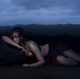

- Slip
- One Day
- Drown
- Can't Get It Out
- Hung up on You
- Distant (met Sean Lew)
- Shoulder to Shoulder
- Teenage Mind
- Hard to Find

- Stupid
- All My Friends Are Fake
- That Way
- Tear Myself Apart
- Happy Face
- bad ones
- rubberband
- slower
- r u ok
- you broke me first
- wish i loved you in the 90s

- ?
- don't come back
- i'm so gone
- what would you do?
- chaotic
- hate myself
- what's your problem?
- she's all i wanna be
- boy x
- you're so cool
- feel like shit
- go away
- i still say goodnight
- cut my hair
- greedy
- run for the hills
- hurt my feelings
- grave
- stay done
- exes
- we're not alike
- calgary
- messier
- think later
- guilty conscience
- want that too
- plastic palm trees

- Miss Possessive
- 2 Hands
- Revolving Door
- Bloodonmyhands (feat. Flo Milli)
- Dear God
- Purple Lace Bra
- Sports Car
- Signs
- I Know Love (feat. The Kid LAROI)
- Like I Do
- It's Ok I'm Ok
- No I'm Not In Love
- Means I Care
- Greenlight
- Siren Sounds (bonus)
- Nostalgia

- TRYING ON SHOES
- ANYTHING BUT LOVE
- NOBODY'S GIRL
- HORSESHOE
- TIT FOR TAT
- Miss Possessive
- 2 Hands
- Revolving Door
- Bloodonmyhands (feat. Flo Milli)
- Dear God
- Purple Lace Bra
- Sports Car
- Signs
- I Know Love (feat. The Kid LAROI)
- Like I Do
- It's Ok I'm Ok
- No I'm Not In Love
- Means I Care
- Greenlight
- Siren Sounds (bonus)
- Nostalgia

- Lil Mosey – "vicious" (2020)
- Ali Gatie – "lie to me" (2020)
- Jeremy Zucker – "that way" (2021)
- Morgan Wallen – "What I Want" (2025)(2021)
- Khalid – "working" (2021)
- Blackbear – "u love u" (2021)
- Troye Sivan & Regard – "You" (2021)
- Tiësto – "10:35" (2022)
- F1 The Movie – "Just Keep Watching" (2025)